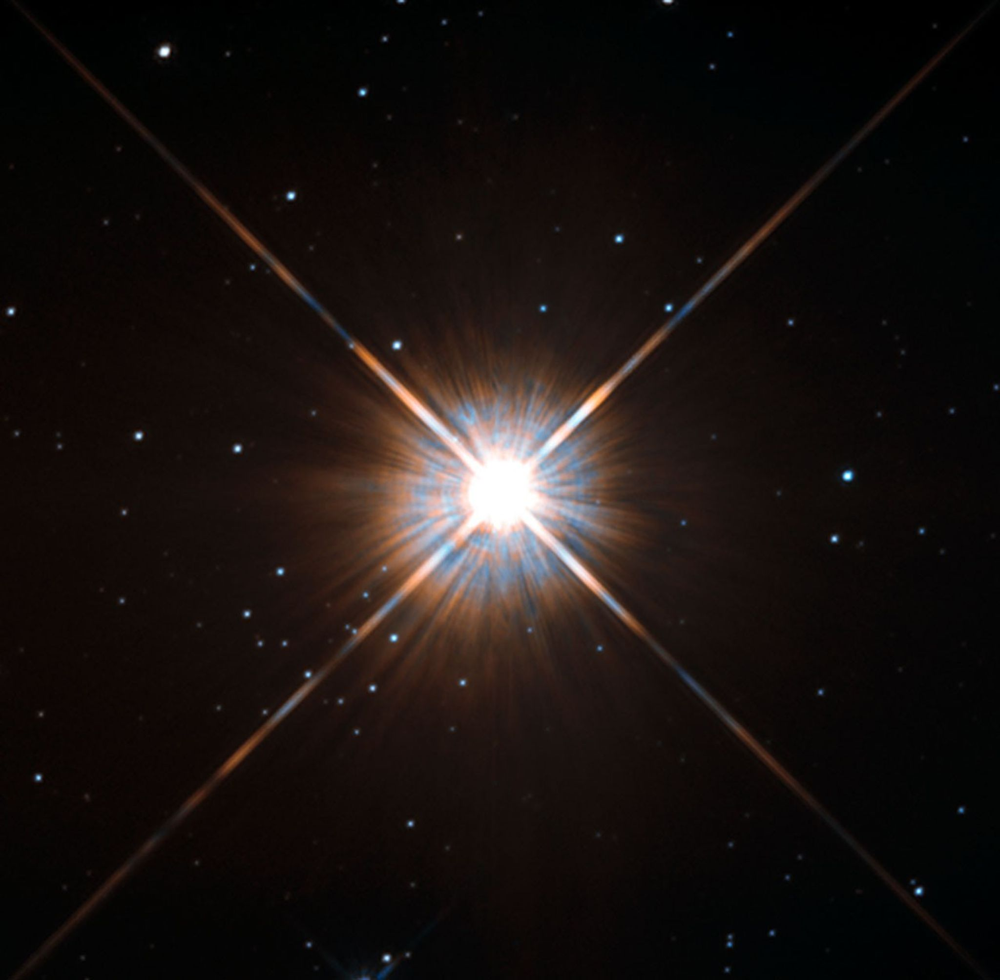

Odkryj Typy Gwiazd
Przeglądaj różne typy gwiazd, od malutkich karłów po olbrzymie supernowe.

Planeta Merkury: Merkury jest najbliższą planetą względem Słońca. Ma cienką atmosferę i bardzo wysokie temperatury w ciągu dnia oraz ekstremalnie niskie w nocy.